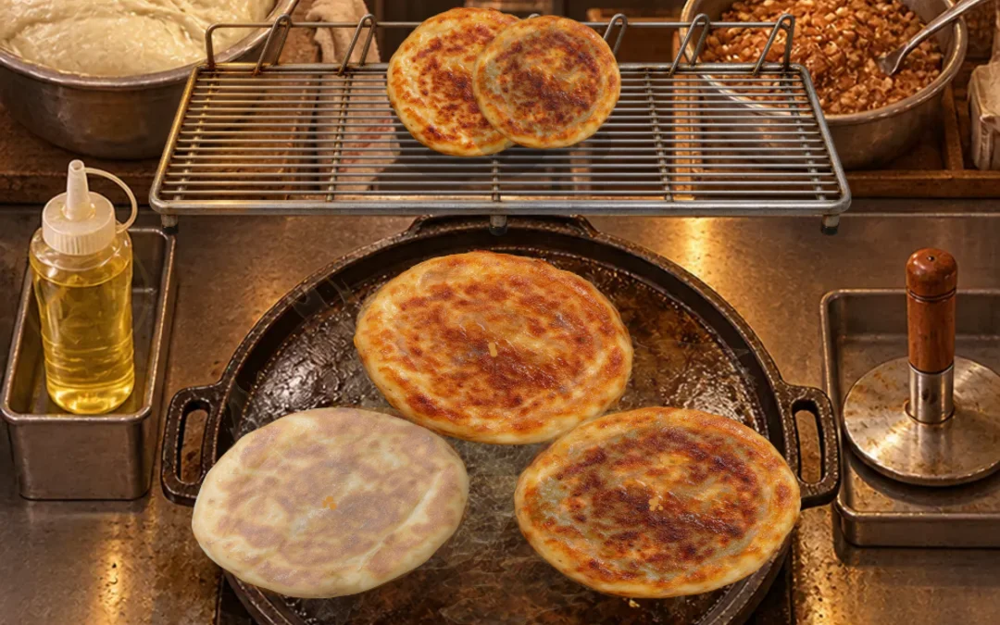
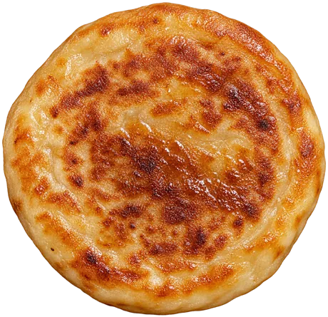

호떡 준비 중

90초 동안 최대한 많이 파세요. 너무 세게 누르면 터집니다.
도전장이 도착했습니다
친구의 호떡집 운영 기록
0개
이길 수 있으면 해보세요.
시간 종료!
판매한 호떡 0개
판매 0개 · 남은 호떡 0개 · 만족 손님 0명 · 불만 손님 0명
공개 주소가 설정되면 켜져요(테스트 상태)
@ccojik

친구
VS
나
0 VS 0
무승부. 한 번 더.
도전장에 적을 닉네임